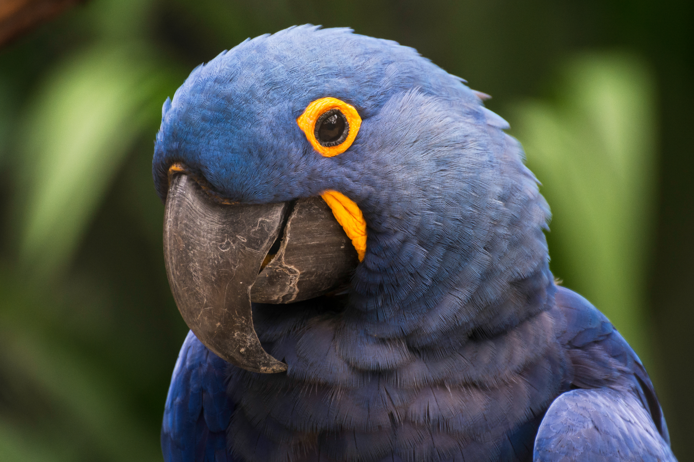

BIOMAS CONTINENTAIS6
Uma diversidade de paisagens e ecossistemas.
Explore a dimensão dos biomas brasileiros e conheça espécies da fauna ameaçadas. Os números vêm de fontes científicas e oficiais, com escopos e categorias identificados.
Explorar os dadosUma diversidade de paisagens e ecossistemas.
Área total aproximada dos seis biomas.
Listas nacional e global, apresentadas separadamente.
Participação aproximada de cada bioma na área do Brasil, conforme a delimitação territorial do IBGE.
Áreas e percentuais aproximados com base na publicação de 2019 Biomas e Sistema Costeiro-Marinho do Brasil — IBGE.
O ICMBio registra 1.249 espécies da fauna brasileira ameaçadas na lista nacional. Abaixo, exemplos com suas categorias globais da IUCN e nacionais do ICMBio. As categorias podem divergir porque os escopos de avaliação são diferentes.
 01
01
02 03
03 04
04Nenhuma espécie desta seleção está em destaque no painel. Ajuste os filtros ou consulte o mostruário completo.
As ameaças variam por espécie e território. Estes fatores aparecem em avaliações e planos de ação de conservação — não são uma classificação única para toda a fauna.
Conversão e ocupação do território reduzem áreas de vida e isolam populações.
Incêndios e alterações ambientais podem destruir abrigo, alimento e locais de reprodução.
A retirada de animais da natureza pressiona populações e desequilibra ecossistemas.
Estradas, expansão urbana e conflitos com atividades humanas aumentam riscos para a fauna.
Referências para avaliação de ameaças: Planos de Ação Nacional para a Conservação das Espécies Ameaçadas (ICMBio) e Classificação de ameaças da IUCN.
Lista nacional: ICMBio / MMA — Portaria MMA nº 148/2022. Categorias globais: IUCN Red List. Consulte as fichas para detalhes da avaliação.